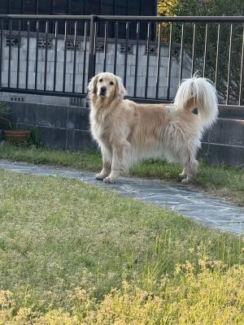

自動車学校って高いんだねぇぇ !
ハルがこの春、無事に大学に進学できて、
「さて、次は ? 」となったのが自動車の免許取得です。
まぁ、聞いてはいたけど一応(笑)・・・免許取るのってお金かかるんだねぇ !
ぶっちゃけ、自分が免許取った頃のことなんて覚えてない・・・ってか、
多分親が出してくれたので金額のことなんて、全く考えもしなかったよ。
免許を取得するためのお金がけっこう高い、ってことも大変なことなんだけど、
それより「いつ行く ? どこに行く ? 」ってことも問題で、
そもそも予定が立たないっていうか、バタバタしているうちに
2月、3月と、あっという間に2ヶ月が過ぎちゃった(汗)。
いつだったか「ハルの車の免許、どうする ?? 」って話が出た時は
「卒業式のだいぶ前に寮を追い出されて帰ってくるし、
大学が始まる前までに合宿とかでさっさと取っちゃえば。」とか・・・
言ってた気がしますが(笑)、とんでもねー・・・
そんな呑気なこと言ってたって寮を退寮した2月初めには
どこの教習所もいっぱいで、入れる学校なんてどこにもありませんでしたよ。
なら、仕方がないので学校に通いながら、ぼちぼち取ったら ?
って話していたんだけど、社会人のお子さんがいる奥さまがたが
口を揃えて言うんだな・・・
「いや・・・めっちゃくちゃ時間かかるよ ? 配車の予約が取れないんだよ。
この辺りはそもそも教習所が少ないからねぇ。」
言われてみたら、多分通える範囲の教習所って、2校 ? 3校 ??
しかもハルの場合、学校からら正反対の方向に通わないといけないんだよね。
うーん・・・どうする ?
もう、いっそ冬休みとかに合宿で取ったら ? (冬は車校代だいぶ安いし)
あたしの実家(岡崎)の近くに合宿やってる教習所あるよ ?
とか言ってたんだけど、
先日、自分で友だちと相談して合宿免許の申し込みをして来たらしく
「内金払ってちょー」ってお手紙が届いておりました・・・うーむ・・・。
一応履修登録を済ませる時期で、予定なんかも一応調べたんでしょうけど、
夏休みのちょうどお盆・・・ ? おいこら(汗)、実家のばーちゃんに怒られる(私が)。
しかも・・・夏休みも受講料高っかいねぇぇぇ !!
ねー、車校代自分で出す気ない ?? って聞いてみたけど
「うん、ないよー。」って、即答されたヨ、しょぼーん(笑)。

じちゅはひましゃんは、くるまはしゅきなんでしゅよ。
しゅきだからうれしくなって、わーいてなっちゃうでしゅ・・・
はるちゃんはくるまうんてんしゅるでしゅか ?
しょしたらひましゃんはおとなりでわーいて、おーえんしゅるでっしゅ !